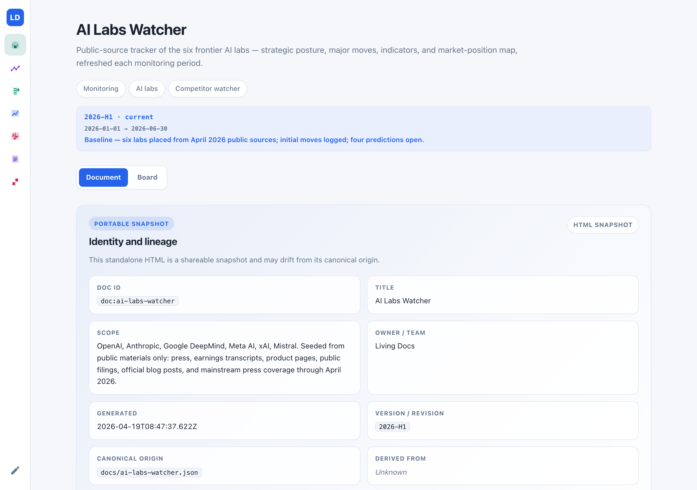
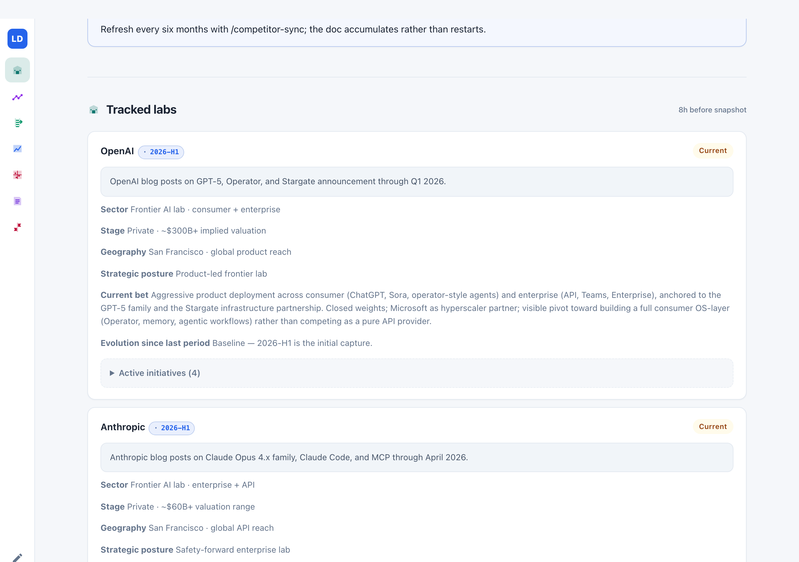
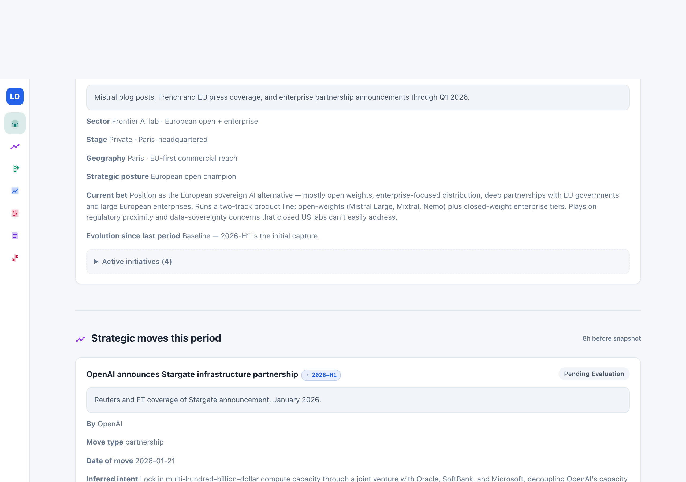
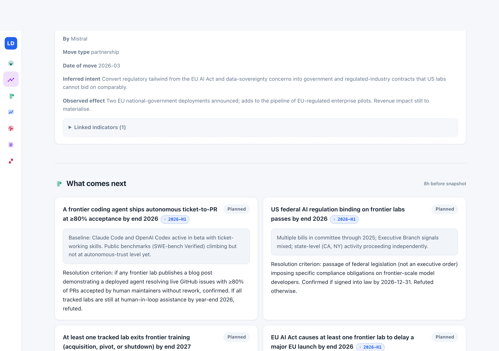
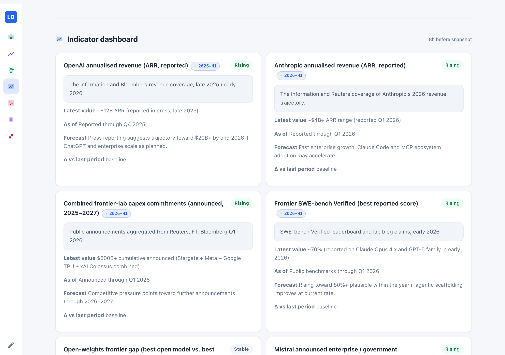
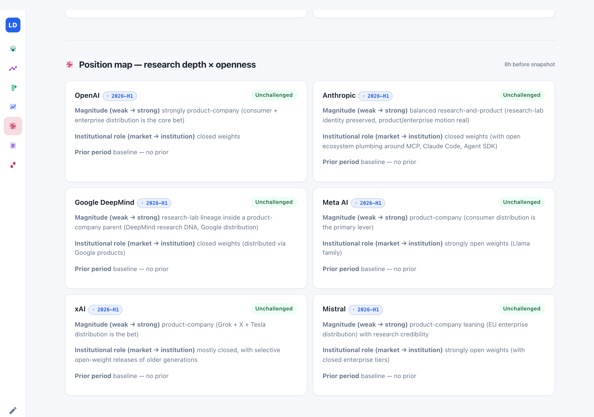
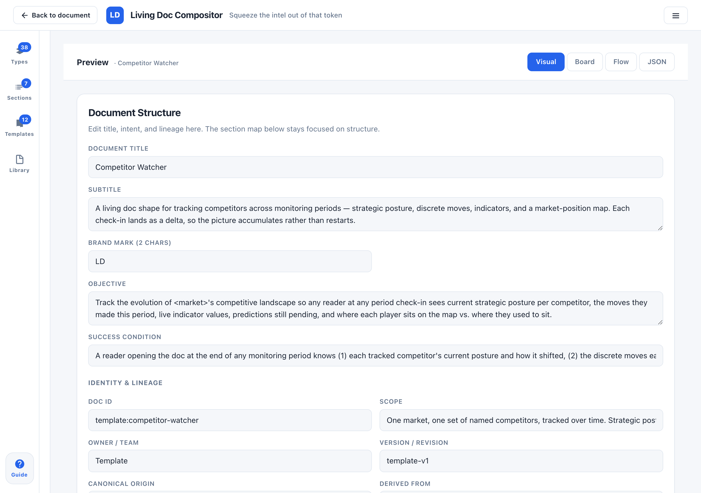

You are trying to hold a real view on where AI is going in 2026. Altman said something last month about GPT-5's enterprise trajectory. Amodei said something different in an Ezra Klein interview. Gemini 3 dropped and rolled across Google's product surfaces. Meta announced the Superintelligence Labs push and hired three people you recognised. Stargate became a real number. Colossus is expanding. Mistral signed two EU government deals. A new SWE-bench score made the rounds. Polymarket on AGI-by-2028 is at some number that feels wrong but you're not sure why. You were informed for a week. Now you've lost the thread on whether Mistral is still open-weights dominant or whether that EU deal meant a shift, and you can't remember which of Acemoglu's TFP critiques applies to OpenAI's current revenue trajectory and which applied to the older 2025 one.
This is what trying to follow the AI labs looks like right now for most of us. Views on these labs are getting quantified and bet on — Polymarket has AGI markets, Metaculus has capability timelines, investors price Anthropic and OpenAI off rumoured revenue multiples, regulators are drafting rules that bind specific named labs. Having a serious opinion on "what OpenAI is betting on right now" matters for product decisions, investment theses, policy positions, and bets on outcomes. And the information is all there — press releases, earnings commentary, blog posts, interviews, benchmark leaderboards, SEC filings — scattered across a firehose that resets your memory every week.
What I wanted was one page for the six labs. Open it, scan it, close it. Come back next week and see what moved — in evidence, not vibes. Here's what I built.

The blue strip under the pills is the monitoring period. Today there's one entry — a consolidated baseline written in mid-April 2026 covering Q1–early-H1 public material. From next week it runs weekly (2026-W17, 2026-W18, …), and the strip will grow. By the end of the year it's the first thing you glance at: which cards moved this week, which have stayed put for a month, which haven't been touched since baseline.
Below the snapshot metadata you hit the first real section: the six labs themselves.

Every card follows the same shape: lab name, sector/stage/geography, a stance badge, a one-line posture label, a one-paragraph current-bet prose (what they are investing in right now, as inferred from behaviour), an evolution since last period field that's empty at baseline and fills with specific behavioural shifts over time, and the active initiatives visible this period. The period chip next to each name tells you when the card last moved — so a reader next month can see at a glance which labs are fresh-this-week and which have been quiet.
Then a section that isn't in other monitoring trackers I've built — strategic moves.

A press release about Stargate is two different things at once: it's a move (OpenAI took a real action, announced a real partnership), and it's a citation (you read about it in the press release and in Reuters coverage). Most competitor analyses collapse those into one category — "recent news" — and the picture gets muddy because you can't tell what happened from what was reported about what happened. Keeping them in separate sections is how the page stays legible as the weeks pile up: the Stargate card in the moves section tells you what OpenAI did and what's happened since; the Stargate coverage in the sources section tells you which journalists and which outlets carry the thread.
Each move carries a moveType (launch, pricing, acquisition, hire, partnership, exit, product-retired), a dateOf, an inferred intent in one sentence, and an observed-effect field. At baseline most moves are pending-evaluation because their consequences haven't materialised yet. A few weeks later, Stargate's observed-effect will either read "reshaped Azure-only dependency" or "announcement ahead of execution" or somewhere in between — and the status will transition accordingly.
Below moves, the predictions ladder.

Each rung carries a resolution criterion written now, in plain language: if any frontier lab publishes a blog post demonstrating a deployed agent resolving live GitHub issues with ≥80% of PRs accepted by human maintainers without rework, confirmed. If all tracked labs are still at human-in-loop assistance by year-end 2026, refuted. Writing the criterion at baseline — before the evidence lands — is the part that keeps predictions honest. When a resolution lands, it either matches the criterion or it doesn't, and past-me can't cheat present-me.

Indicators are the numeric half. Each card carries the latest value as text (not a structured number — this is a first-version tradeoff; a proper numeric-status field would be a follow-up), an as-of date, a forecast in plain language, and a delta-vs-last-period field. Trend is categorical: rising, stable, falling, resolved. At baseline everything reads baseline in the delta field. When a fresh earnings rumor, a benchmark print, or a State of AI update lands, the delta tells you what moved without you having to re-derive the numbers from scratch.

The map is where movement gets visible. At baseline, every card reads "prior period: no prior" because there isn't one yet. A few weeks in, some cards will say "prior: moderately research-lab (from 2026-W17)" against a current position that has shifted. The axes are a judgment call — I picked research-depth × openness because those are the two dimensions I reason along when thinking about these labs. Pick different axes if you care about different things.
Below the map, a period-grouped citation feed of the sources that ground the baseline — OpenAI's Stargate blog, Anthropic's Claude Opus 4.7 and MCP posts, Google DeepMind on Gemini 3, press coverage of Meta Superintelligence Labs, Reuters on Colossus, Mistral press releases, the State of AI Report 2025, PIIE on AI-and-labor. Nothing fancy: dated sources grouped under their period, so in two years you can see exactly when each piece of evidence entered the picture.
What's different from the topic tracker I built earlier
Readers of Series 02 №01 will recognise most of the shape — period strip at the top, evolution fields on each card, predictions ladder, indicator dashboard, two-axis map, period-grouped citations, period note at the end. Two things are new enough to be worth naming.
First, the lab cards are a different card type than the expert cards in the AI-labor tracker. Individual public intellectuals state positions in writing; organizations reveal strategy through behaviour. The field shape needs to reflect that: sector and stage and geography; strategic posture as a label; current bet as prose inferred from observable moves; active initiatives. Calling these competitor-stance-track cards instead of re-using expert-stance-track was a deliberate call — same skeleton, different semantic contract, so a reader (human or agent) always knows what kind of thing they're looking at.
Second, strategic moves get their own section. Events in the world aren't citations, and vice versa. Keeping them separate is what lets the tracker age well: in 2028 the moves section tells you what each lab did across four periods; the citations section tells you which sources you consulted along the way. If both lived together, you'd have a chronological news feed and the strategic signal would blur into the noise.
Cadence, and the weekly update loop
One thing worth pausing on: cadence is a domain choice, not a property of the tool. The earlier tracker in this series covered AI and labor and runs half-yearly because academic papers, quarterly macro prints, and slow-moving policy don't produce fresh signal more often than that. AI labs is the opposite — launches, earnings, hires, benchmark scores, and major interviews land every week. Running that one half-yearly would mean ten things collapsed into one evolution note. So this tracker runs weekly, and the baseline is a one-time Q1 consolidation before the weekly cadence kicks in. Pick what fits your market when you fork.
There are two honest operating paths. Which one you take depends on whether you have Claude Code installed on your machine.
Path A · you have Claude Code. In your terminal, run /competitor-sync docs/ai-labs-watcher.json 2026-W17. Claude Code becomes the agent. It walks each lab's public feed for the week's window — company blogs, press releases, earnings commentary where fresh, pricing page snapshots, product page diffs, major interviews in mainstream outlets — and proposes edits directly to the JSON file: stance updates where behaviour has shifted, new moves with intent and primary sources, prediction rungs transitioning where evidence supports it, indicators refreshed with new prints. You review each proposed edit through Claude Code's normal tool-use flow — accept, skip, or adjust — then ask it to re-render the HTML. Open the refreshed page and you see a new entry in the period strip, fresh evolution notes on the cards that moved, new moves under 2026-W17, updated deltas on indicators, and a period note summarising what shifted.
Path B · no Claude Code, or you prefer to do it yourself. Open the rendered HTML. Click the pencil icon in the sidebar. The compositor opens on top of the page — it's embedded in every rendered tracker, works offline, no backend. Edit each card that needs updating this week: the stance label if behaviour shifted, the evolution field, the new moves, the indicator prints. Export the fresh HTML when you're done; save it back over the old one. A weekly update scanning six labs' feeds yourself is maybe twenty minutes if the week was quiet, an hour if several real moves landed. The compositor doesn't need a server for this — the UI and the data round-trip happen entirely in your browser against the file.
Both paths produce the same end state: a tracker that now has 2026-W17 in its period strip alongside the baseline, with the cards that moved carrying the fresh period chip. The skill makes the weekly archaeology cheaper when you have it; the static file plus embedded compositor is what keeps the loop possible either way.
Fork it for what you watch
Six AI labs is not the only thing this shape fits. Competitor watching on any market works the same way — replace the companies with your real competitors, the moves with launches and pricing changes in your space, the predictions with the forks in your market you're watching for, the indicators with whatever numbers move your business or your thesis, the map axes with the two dimensions that separate your players.

Some concrete forks worth considering:
- Your B2B SaaS landscape. Five-to-eight competitors you compete with. Axes: enterprise ← → bottom-up × specialized ← → horizontal. Indicators: ARR estimates, pricing-tier distribution, LinkedIn hiring velocity. Moves: launches, pricing, acquisitions, exec hires.
- A macro-rates tracker. Named voices: Dalio, Druckenmiller, El-Erian, Ferguson, whoever you read. Axes: hawkish ← → dovish × growth ← → stagflation-concerned. Indicators: yield-curve spreads, dollar index, gold. Moves here are commentary-driven rather than company actions, so use the monitoring-tracker template instead (the one the AI-and-labor tracker uses).
- AI-safety research orgs. Tracked orgs: ARC Evals, METR, Redwood, Apollo, the lab safety teams. Axes: capability-research ← → alignment-research × academic ← → industry. Indicators: papers published, benchmarks released, regulatory engagement.
- Policy-fight watcher. Named policymakers on a specific piece of legislation. Axes: support ← → oppose × pragmatic ← → ideological. Indicators: vote counts, polling, committee schedule.
The shape carries. Convergence-type choices are consistent across forks; axes and card content are yours to pick. Swap, export, save somewhere you'll find it in six months.
The legal question, directly
Public-source competitor analysis is legal and common. Analysts, newsletters, and research firms publish it every day — Stratechery, The Information, Matt Levine, Gartner, CB Insights, State of AI Report itself. So long as you're sourcing from things companies intend to be public (press releases, earnings commentary, product pages, SEC filings, official interviews), a tracker like this one can sit on a public URL without concern.
The actual cautions, briefly:
- Don't republish licensed content. Paid analyst reports (Gartner, Forrester, subscription research) carry terms that restrict redistribution. Summarising with attribution is normal fair-use territory; copying substantive content isn't.
- Distinguish observed facts from inferences in the prose itself. "OpenAI announced Stargate with Oracle and SoftBank" is observed. "OpenAI is reducing its Azure dependency" is inferred. Write so the reader can tell which kind of claim each is — the tracker format helps here because observed facts live in the moves section and inferences live in the strategic-posture prose of the lab cards.
- Defamation still applies. False and damaging statements are actionable whether the source was public or not.
- Employment agreements. If you work at a competitor of one of the tracked companies, your contract may restrict what you can say publicly. That's contractual, not legal.
The distinction worth keeping is between public-source trackers like this one (fine to share, fine to publish) and your company's internal competitive-intel deck (draws on private sales calls, paid research, confidential strategy sessions — stays private). The two look similar on the page; they live in different places.
Working tracker: AI Labs Watcher. Opens in any browser. Pencil icon in the sidebar launches the compositor; fork it in place.
Blank template: Competitor Watcher template. Same shape, placeholder cards, ready to point at whatever market you watch.
Both are MIT-licensed static HTML. No backend, no accounts, no tracking. Refresh every six months with /competitor-sync if you have Claude Code, or manually in the compositor otherwise.
Six months from now, the tracker tells you what moved. Today it tells you where everyone stands. Open it before you place the bet, or write the thesis, or walk into the meeting where someone's going to ask which lab you'd work with.